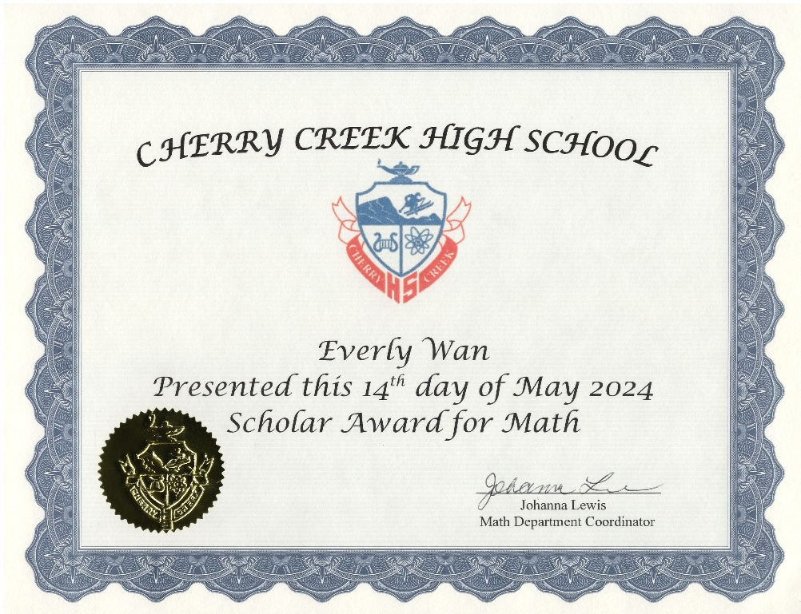

Honors and Awards
Cherry Creek High School Award Every Year

Scholar Award for Math - 2024
This Award is given once per year, with fewer than 10 recipients across all four grades at Cherry Creek High School

Outstanding Achievement in English Language Acquisition - 2023
This Award is given once per year, with fewer than 10 recipients across all four grades at Cherry Creek High School

1st Place Computer Game & Simulation Programming
1st Place Computer Game & Simulation Programming in my FBLA club